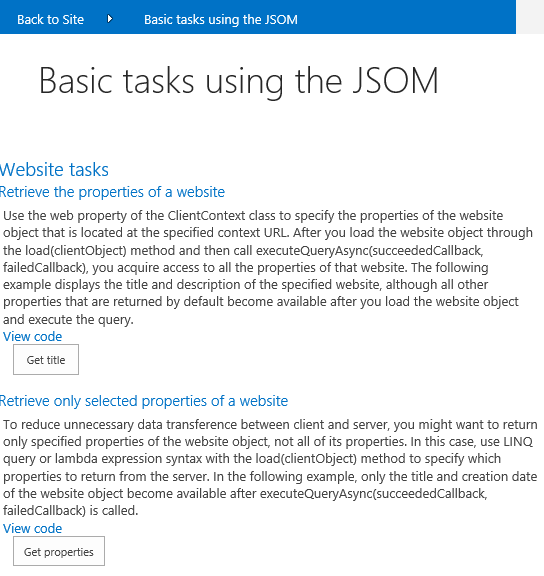

This SharePoint-hosted app demonstrates how to use the JSOM in an HTML page hosted in SharePoint. The sample also demonstrates how to perform many basic tasks with websites, lists, and list items. The following screen shot shows
the start page of the Basic Tasks JSOM app.
Figure 1. Basic tasks JSOM app start page

Prerequisites
This sample requires the following:
- Visual Studio 2012
- SharePoint development tools in Visual Studio 2012
- A SharePoint 2013 development environment for apps.
For more information, see
How to: Set up an on-premises development environment for apps for SharePoint.
Key components of the sample
The sample contains the following:
- BasicTasksApp project.
- BasicTasksJSOM HTML page, which contains the required HTML elements.
- App.js JavaScript file, which contains the code for the basic tasks using the JSOM.
- AppUIEvents.js JavaScript file, which contains the event handlers for the user interface (UI) elements in the HTML page.
- App.css style sheet file, which contains the styles used in the sample.
Configure the sample
Follow these steps to configure the sample.
- Update the Site URL property of the solution with the URL of your SharePoint website.
Run and test the sample
- Press F5 to build and deploy the app.
- In the Basic tasks using the JSOM page:
-
- Click the View code link to display the code required to perform the task.
- Press the button to execute the task.
Change log
First version: September 2012
Related content